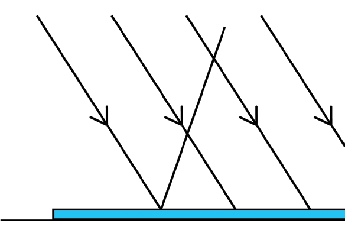
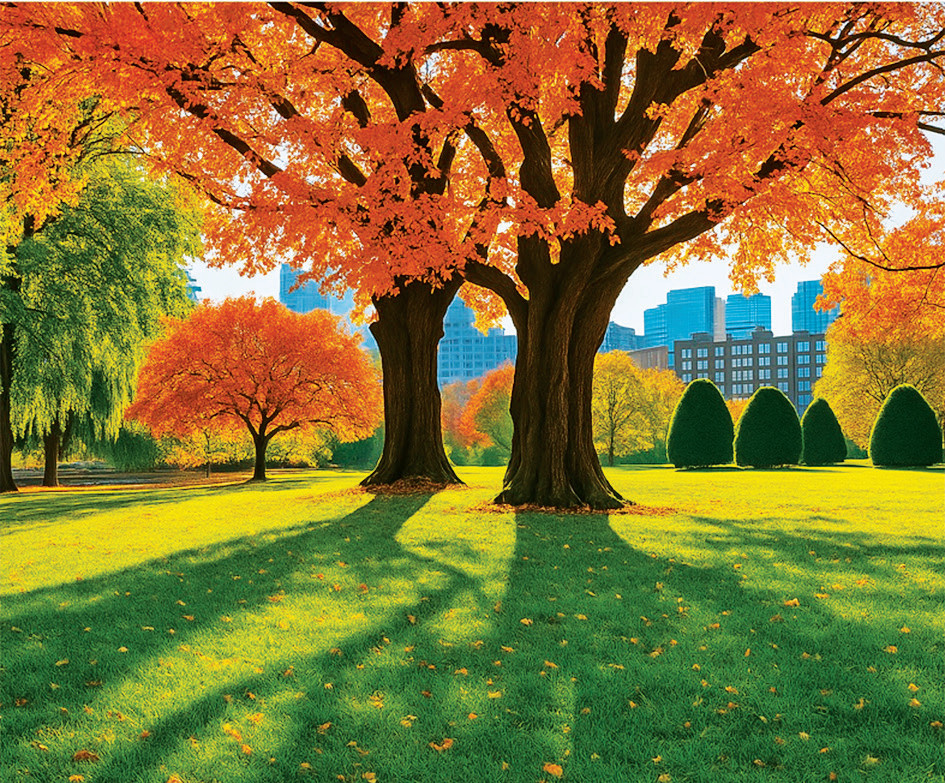

are glass panes of windows, glass slabs, prisms, and clear plastics.
Translucent materials allow only part of the light to pass through them but not enough to make a defined image. This happens as light rays get scattered when passing through the material as shown in Figure 4.4. Oiled paper and tinted frosted glass are examples of translucent materials. Tinted glass is used in car windows. Some glass windows in houses are frosted to provide privacy. You cannot see clearly through a translucent material.
Opaque materials are materials which totally block the light, as shown in Figure 4.5. A block of concrete, wood, a book, a wall, and a human body are examples of opaque materials.

Shadows
When an opaque object is in the path of a beam of light, a darkened region is formed behind the object. Little or no light reaches this region because the opaque object does not allow light to pass through it. This region is called a shadow. The shadow is formed because light travels in straight lines. Shadows have sharp edges as shown in Figure 4.6.
